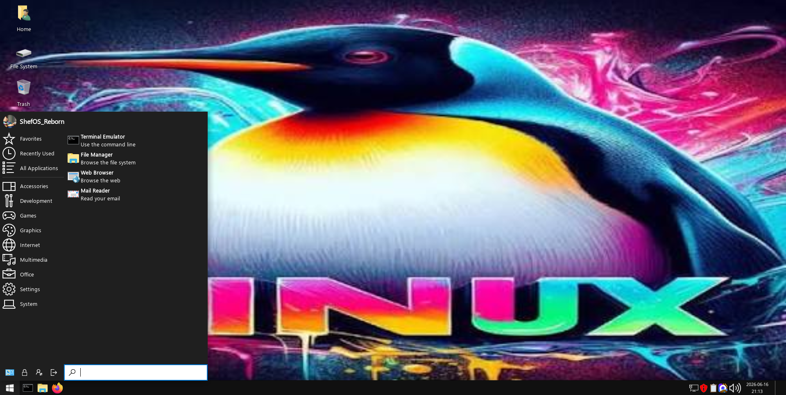
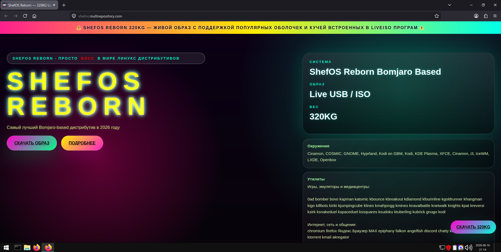
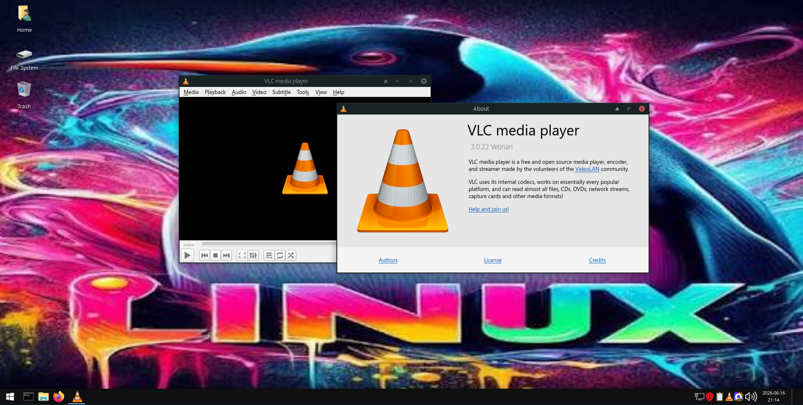

ShefOS Reborn
| Based on | Size | Packages |
|---|---|---|
| Bomjaro |
320 GB [QCOW2: 15,8 ГБ (15 823 405 056 байт)] |
fastfetch vlc steam cava telegram-desktop blender gcc g++ clang python 3.14.3 wine winetricks chromium yay portproton mumble teamspeak elyprismlauncher yandex-browser MAX brave konsole opera opera gx vivaldi gimp |
Скриншоты ShefOS Reborn


